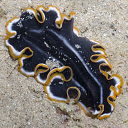
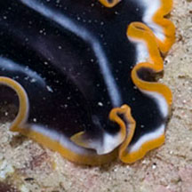
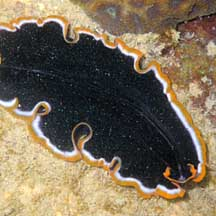
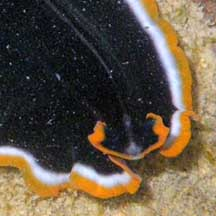
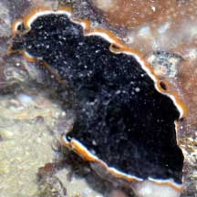
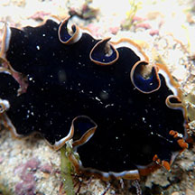
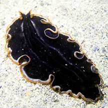
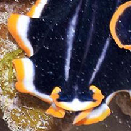

|
|
| flatworms text index | photo index |
|
worms > Phylum Platyhelminthes >
Class
Turbellaria > Order Polycladida
|
| Halloween
flatworm Pseudobiceros sp. 5* Family Pseudocerotidae updated Feb 2020 Where seen? This black flatworm with orange and white ruffled margins is all ready for Halloween. It is sometimes seen on the reefs of some Southern shores. Features: 5-8cm long. Body black with broad white and orange margins. Sometimes three narrow white parallel lines in the centre starting from the head, fading towards the end of the body, the two outer lines wider, the central line much narrower. Underside black with orange margins. It has a pair of pseudotentacles that are squarish and ruffled on the sides. |
|
 St John's Island, Nov 12  |
 Pulau Biola, Dec 09  Pseudotentacles squarish, ruffled on the sides. Photo shared by Loh Kok Sheng on his flickr. |
*Species are difficult to positively identify without close examination.
On this website, they are grouped by external features for convenience of display.
| Halloween flatworms on Singapore shores |
On wildsingapore
flickr
|
| Other sightings on Singapore shores |
 Big SIsters Island, Feb 22 Photo shared by Loh Kok Sheng on facebook. |
 Pulau Jong, Jun 18 Photo shared by Jianlin Liu on facebook. |
 Terumbu Semakau, Apr 21 Photo shared by Jianlin Liu on facebook. |
 |
|
Acknowledgements
|